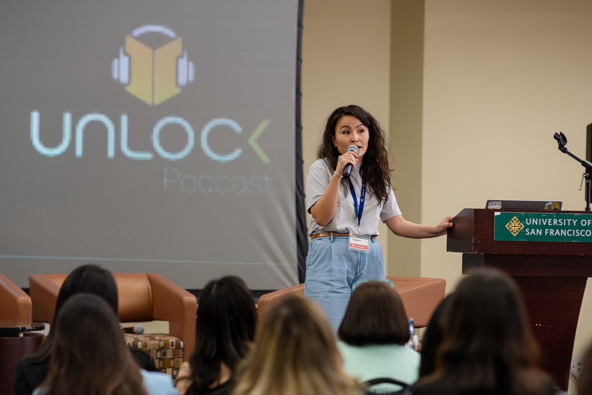

B
Welcome
Batchimeg Ganbaatar
Board Chair, MNG Summit · Co-Founder & Managing Partner, Nomadic Venture Partners
Ten years from a Chicago career fair, MNG Summit returned to the Bay Area for its biggest gathering yet, a three-day program at the University of San Francisco that doubled as a celebration of a decade of the Mongolian diaspora coming together.
10th Anniversary · USF McLaren · United for Impact · 9th annual, 10 years in.
The 2024 summit's theme, "United for Impact", wasn't just a tagline. It was a directive: acknowledge our individual selves and leadership, and the power we have to influence the lives of others. The program brought speakers focused on collaborative solutions for a better future in business, society, and the environment.
Three days at McLaren Conference Center on the University of San Francisco campus, with hotel accommodations at the Hyatt Regency at Embarcadero. Attendees flew in from across the U.S., Mongolia, Canada, and Europe. Tickets ran $100 student / $150 early-bird / $200 regular. The 10th anniversary gala featured DJ BEME spinning a fusion of dark techno and Mongolian cultural sounds, a small detail that captured the whole vibe.

10th Anniversary, themed United for Impact, at the McLaren Conference Center, University of San Francisco. Reproduced with confirmed speaker affiliations as listed at the time of the summit.
Optional Bay Area tour day. Friday was for arrival, Bay Area exposure, and the soft open. Attendees met in the Hyatt Regency lobby at Embarcadero and chose between a coastal hike and curated company tours, capped by a casual Polk Street happy hour.
Lead the journey. Reflect on the path. Day one opened with a Consul General address, an opening keynote on leadership, two thematic panels, Open Mic storytelling, and a wellbeing session, closing with a Hyatt Waterfront-Room happy hour.
Navigate the digital frontier. Restart with skills. Day two opened with Salesforce VP Kevin Francis, then a panel on emerging technology, a second Open Mic block, and two practical workshops. The 10th anniversary closed where it started: in conversation.
Reconstructed from the 2024 program archive · Affiliations as listed in March 2024 · Photos and recordings: archive@mngsummit.org
Confirmed lineup from the SF program archive, grouped by session. Affiliations as listed in March 2024.
The Open Mic block at SF 2024 was the latest revival of MNG Summit's "Надад Хэлэх Үг Байна" tradition, community storytelling in Mongolian and English. We're planning the next one in 2026.
By acknowledging our individual selves and leadership and our power to influence the lives of others, we embarked on a journey toward impactful transformation.MNG Summit 2024 program statement
Research & demographics: Bolor (Chicago research) · Michelle Bubon (Minneapolis demographics) · Booth Social Impact MBA team.
Program & operations: Tumenkhuslen Batdelger · Itgel Delgerdalai · Enkhtur Narant · Tegshee · plus the 100+ day-of summit volunteers who staffed registration, AV, photography, hospitality, and the gala.
If you helped build SF 2024 and we haven't named you, write to contact@mngsummit.org and we'll add you.